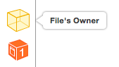

")
Los view controllers son la C del MVC. Su tarea más importante es gestionar una jerarquía de vistas. Cada controller tiene una vista “principal” o “raíz” (su propiedad view), y esa a su vez tiene subvistas que por supuesto pueden contener otras subvistas y así sucesivamente.
Hay dos tipos básicos de controladores: los que muestran directamente contenido (content controllers) y los que contienen otros contenedores (container controllers). Estos últimos contienen a otros controladores. Lo que hace el contenedor es redimensionar y colocar la vista principal de sus hijos, pero cada uno de ellos es responsable de mostrar su propio contenido
Además de gestionar la jerarquía de vistas, los controladores actúan como el “pegamento” que relaciona la vista con el modelo. El controlador es el lugar típico para poner el código que reacciona a los eventos del usuario, como por ejemplo qué hacer cuando se pulsa un botón.
Es nuestra responsabilidad como desarrolladores asegurarnos de que no colocamos demasiada lógica en el código del controller. La lógica debería ir en el modelo, no en el controller, que debería contener el mínimo código imprescindible para comunicar vista y modelo.
Por otro lado, los controllers son los responsables de adaptar las dimensiones de los componentes de la interfaz a las dimensiones reales de la pantalla. Para ello se usan varios mecanismos: autolayout, size classes y traits, que veremos a nivel introductorio en las siguientes sesiones.
Cada controlador va pasando por una serie de estados conforme se carga la aplicación, se muestra la pantalla que este gestiona, se cambia de pantalla, etc.
Hay tres métodos principales en los que podemos colocar código propio, según el momento en que queramos que se ejecute:
viewDidLoad(): este método ya lo hemos usado en nuestras aplicaciones. Se dispara cuando se carga la raíz de la jerarquía de vistas del controlador. Típicamente se ejecutaría una sola vez en toda la aplicación, y por ello se suele usar para inicializar propiedades del controlador. No obstante si el sistema anda bajo de memoria puede liberar la correspondiente al controlador y como resultado este método podría ejecutarse más de una vez.viewWillAppear(): se ejecuta inmediatamente antes de dibujar la vista.viewDidAppear(): se ejecuta cuando la vista ya se ha dibujado. Útil para colocar código relativo por ejemplo a animaciones.Los métodos anteriores y sus “complementarios” (con disappear en lugar de appear) se recogen en el siguiente esquema

https://developer.apple.com/reference/uikit/uiviewcontroller
Podemos hacerlo de varias formas. De más sencilla a más compleja (pero también más flexible)
.nib: en cada archivo nib guardamos una pantalla (con su jerarquía de vistas), pero no el controlador, que se crea por códigoloadView crear la jerarquía de vistas que queremos que contenga (UIView, UIButton, lo que sea) y asignar la raíz de la jerarquía de vistas a self.view.En los siguientes apartados vamos a ver las dos primeras opciones con algo más de detalle.
Desde Xcode 5 los storyboards son la forma recomendada por Apple de crear interfaces de usuario. Un storyboard contiene la representación gráfica de las “pantallas” (los controladores) que componen nuestra aplicación y de las relaciones entre ellas. Además el sistema se encarga automáticamente de moverse por las pantallas cuando sucedan determinados eventos, instanciando los controladores y las vistas automáticamente.
Por defecto, los view controller que añadimos visualmente al storyboard son clases propias de Cocoa, es decir, no tenemos que escribir código pero tampoco podemos sobreescribir sus métodos ya que no son clases nuestras. Podemos cambiar la clase de cualquier elemento en el Interface Builder seleccionándolo y yendo al icono del Identity inspector:  en el área de
en el área de Utilities. Seleccionaremos el controller y cambiaremos su Class por una escrita por nosotros y que herede de UIViewController.
Seleccionar el view controller con el ratón haciendo clic sobre él a veces no es sencillo, ya que acabamos seleccionando los elementos de la vista contenidos en él. Podemos hacerlo más fácilmente pulsando el icono de view controller que aparece en su parte superior
En cada momento habrá un view controller inicial que es el que se muestra cuando se carga la aplicación. Se distingue visualmente porque tiene una flecha apuntando a él desde la izquierda:

Para convertir un view controller en inicial, teniéndolo seleccionado ir al icono de propiedades  del área de
del área de Utilities y marcar sobre el checkbox Is initial view controller

También podemos arrastrar la flecha que indica que un controlador es el inicial desde el actual hasta el que queremos convertir en inicial.
Son las transiciones entre los controllers. Podemos crear un segue visualmente con Ctrl+Arrastrar entre un elemento cualquiera de un view controller (por ejemplo un botón), que será el de controller de origen, y el controller destino. Se nos dará a elegir el tipo de *segue* en un menú contextual.

Como vemos en el menú contextual hay cuatro tipos de segue. Dos de ellos son mostrar (show) y otros dos presentar (present). Además podemos programar nuestro propio tipo de segue con custom.

Como vemos en el menú contextual, en el caso del show se distingue además entre Show “a secas” y Show detail. El primero es el indicado cuando el nuevo controller va a sustituir completamente al anterior y el segundo cuando el nuevo es “secundario” con respecto al anterior (como en el ejemplo que poníamos del tab bar.
En el caso del present, se distingue entre Present Modally y Present As Popover. El primero sería lo que todo el mundo entiende por “modal”: el nuevo controller se pone “encima” del anterior. El segundo es el típico popover que aparece en el iPad.

En realidad la forma concreta de mostrar exactamente el nuevo controlador la decide iOS dependiendo de las dimensiones actuales del dispositivo. Por ejemplo en un iPhone SE en vertical no aparecerá un popover aunque lo especifiquemos, la que la pantalla es muy pequeña para ello.
Podemos configurar las propiedades del *segue* haciendo clic sobre él y yendo al icono de propiedades  del área de
del área de Utilities. Aquí podemos cambiar el tipo y también la transición usada para navegar de una pantalla a otra.
Podemos usar diversos estilos a la hora de presentar de forma modal un controller. Por ejemplo podemos indicar que el nuevo controlador debe ocupar toda la pantalla, o bien solo el alto dejando una zona a los lados, o bien un recuadro central como un cuadro de diálogo…

Estos estilos se definen en una propiedad del controller a presentar, y no del *segue*. En Xcode podemos cambiarlos con la propiedad Presentation en el attribute inspector  del controller:
del controller:

En Swift especificamos el estilo dando valores a la propiedad modalPresentationStyle del controller que vamos a presentar.
Por otro lado, también podemos especificar una animación para la transición entre el controller actual y el siguiente. De nuevo es una propiedad del controller destino, no del segue. En Xcode se controla gráficamente con la propiedad Transition style del inspector de atributos. En Swift con la propiedad modalTransitionStyle del controller a presentar.
Cuando se va a saltar de un controller a otro a través de un segue, se llama al método prepare(for:sender:) del controller origen. Podemos sobreescribir este método para pasarle datos al controller destino. El primer parámetro va a instanciarse al segue y a partir de este podemos obtener una referencia al destino.
Por ejemplo supongamos que tenemos dos controller conectados por un segue, y este se dispara con un botón en el primero.
Supongamos que el primer controller es un objeto de la clase ViewController, mientras que el segundo es de la clase ViewController2. En el código de ViewController2 podría haber algo como:
class ViewController2 : UIViewController {
var mensaje = ""
override func viewDidLoad() {
super.viewDidLoad()
print(self.mensaje)
}
}Es decir, imprimimos un mensaje cuando se carga la pantalla (lo normal sería mostrarlo en un label o similar, pero para los propósitos de este ejemplo nos basta con que salga en la consola).
Podemos acceder a esta propiedad texto desde el controller anterior sobreescribiendo el método prepare(for:sender:)
override func prepare(for segue: UIStoryboardSegue, sender: Any?) {
if (segue.identifier=="siguiente") {
if let vc2 = segue.destination as? ViewController2 {
vc2.mensaje = "Bienvenidos a la pantalla 2"
}
}
}Aunque podemos crear un segue de modo visual, no podemos configurar visualmente cómo volver a la pantalla anterior cuando hemos seguido un segue. Esta “vuelta atrás” se llama unwinding y para conseguirla tenemos que escribir algo de código.
En el controller al que se vuelve atrás debemos implementar un método que puede tener el nombre que deseemos pero debe tener una signatura específica:
- Está “marcada” con un @IBAction
- Tiene como único parámetro un UIStoryboardSegue, que es el segue que se está usando para volver atrás. Por ejemplo
@IBAction func miUnwind(segue: UIStoryboardSegue) {
print("Volviendo atrás por \(segue.identifier)...")
}Ahora en la pantalla que dispara el unwind debemos conectar usando Ctrl+Arrastrar el elemento de interfaz que produce la vuelta atrás con el icono de Exit que aparece en la parte de arriba.

Si intentamos hacer esta operación de
Ctrl+Arrastrarsin haber implementado el método anterior, veremos que no tiene efecto
En el método del unwinding, nótese que podemos usar el parámetro, que es el segue, para obtener el destination, que ahora será el controller al que volvemos.
Finalmente, decir que cuando se produce un unwind, el controlador desde el que se vuelve también recibe una llamada a prepare(for:sender:), método que podemos sobreescribir si queremos aprovechar para realizar alguna operación antes de volver.
Un problema con los storyboards es que no funcionan bien para desarrollar en equipo. Aunque dos desarrolladores modifiquen distintas pantallas de la aplicación, si ambas están en el mismo storyboard tendremos problemas, ya que no es tan fácil resolver conflictos de versiones como cuando trabajamos con código Swift.
En algunas ocasiones puede interesarnos más que cada desarrollador trabaje con sus propias pantallas, o al menos que cada una pueda modificarse de forma individual. Esto lo conseguimos con los archivos NIB, que almacenan una única jerarquía de vistas: típicamente una “pantalla”, aunque también puede ser una subvista compleja.
Un archivo NIB (o .xib, en un momento veremos la diferencia) contiene la jerarquía de vistas asociada a un determinado view controller, pero normalmente no se crea de manera manual, sino visualmente con el Interface Builder. De hecho, el nombre significa “NeXT Interface Builder”, referenciando la famosa plataforma NeXTSTEP de la que hereda y es deudora Cocoa.
Hasta que apareció iOS 5 los NIB eran la forma habitual de crear interfaces de usuario, pero por defecto las versiones actuales de Xcode (desde la 5, correspondiéndose con iOS7) usan storyboards. Nótese que un NIB contiene únicamente la parte gráfica de “una pantalla” de nuestra aplicación y que por tanto es responsabilidad del desarrollador cambiar de un controlador a otro y cargar el NIB correspondiente conforme se va navegando.
Un archivo .xib, que es lo que vemos en la lista de archivos de proyecto en Xcode, es básicamente un NIB serializado en forma de XML, lo que podemos comprobar haciendo clic sobre él con el botón derecho en Xcode y seleccionando Open as > Source code.
En Xcode podemos crear un NIB de dos formas: - Crear un controller y automáticamente un NIB asociado - Crear directamente el NIB y luego asociarle un controller por código
Podemos crear un view controller con un NIB asociado con File>New> File..., seleccionando la plantilla “Cocoa Touch Class” dentro del apartado “Source” y en el paso siguiente, haciendo que nuestra clase sea subclase de un controller estándar (por ejemplo UIViewController) y marcando la casilla create XIB file.
También podemos crear directamente un NIB, sin controller, yendo al menú File>New> File... y seleccionando la plantilla “View” dentro del apartado “User interface”.

El editor visual para NIB es el mismo que para storyboard, con la única diferencia de que estamos editando una “única pantalla” de nuestra aplicación.
El NIB tiene un concepto que no tienen los storyboard y es el del File’s Owner. Este es el objeto que ha cargado en memoria el NIB. Normalmente el “propietario” del NIB va a ser el controller asociado, pero puede ser cualquier otro objeto. El files owner tiene su propio icono en el editor visual

En el módulo de introducción a iOS creábamos visualmente el esqueleto de los outlets y actions haciendo
Ctrl-Dragdesde los elementos del interfaz hacia el código fuente. También se pueden crear outlets y actions arrastrando entre el icono del File’s Owner y el elemento de interfaz, pero es un método ligeramente distinto (primero se escribe manualmente el código y luego se hace la conexión).
Podemos especificar la clase concreta del File’s owner haciendo clic sobre su icono y yendo al Identity inspector del área de Utilities. Aquí normalmente seleccionaremos el controller que queremos que gestione esta “pantalla” de la aplicación.
Si el NIB tiene un controller asociado, se cargará automáticamente al presentar el controller. Por ejemplo, supongamos que hemos creado una clase ViewControllerNIB. Una vez creada una instancia del controller especificamos, si es necesario, el estilo de la transición (modalTransitionStyle) y el estilo de presentación (modalPresentationStyle ). Y finalmente presentamos el controller con present(_,animated:,completion:), donde:
- animated es un booleano que indica si queremos o no animación
- completion es una clausura en la que ponemos el código a ejecutar una vez se haya presentado el controller
//creamos el controller
let vc = ViewControllerNIB()
//Seleccionamos la transición. Por defecto es "coverVertical"
vc.modalTransitionStyle = UIModalTransitionStyle.flipHorizontal;
//presentamos el controller. Usamos una "trailing closure"
self.present(vc, animated: true) {
print("presentado!")
}Ahora, para volver atrás y dejar de ver el controller presentado, usamos el método dismiss(animated:completion), cuyos parámetros son iguales que el present excepto el primero que se omite. Este método lo podemos implementar en el controlador que se ha presentado, o bien en el presentador, ya que si el “presentado” no lo implementa el sistema lo redirige al otro.
Vamos a hacer una aplicación que vamos a llamar “Pioneras”, y que nos dará datos de algunas mujeres pioneras de la informática. La aplicación tendrá una pantalla principal en la que aparecerán sus imágenes, y haciendo tap sobre cada una podremos ir a las pantallas secundarias donde se nos dará más información.
Al crear el proyecto aseguráos de estar usando git (Sea desde Xcode o manualmente) ya que habrá que guardar y marcar el estado con un commit especial en un momento intermedio
Assets.xcassets. También tenemos los textos sobre ellas que se mostrarán en las pantallas secundarias.lovelace.txtCtrl+Arrastrar desde el primero de los botones con la imagen de Ada Lovelace hasta la segunda pantalla.
transition. Pon el valor que quieras.@IBAction func retornoDeSecundaria(segue: UIStoryboardSegue) {
}Ctrl+Arrastrar conecta el botón “atrás” con el icono de “Exit” de la parte superior del controller
Aseguráos de guardar el estado actual del proyecto con un commit cuyo comentario sea “version 1”.
Es un poco redundante tener tantas pantallas secundarias cuando en realidad lo único que cambia es el texto a mostrar. Valdría con una sola secundaria en la que cambiáramos dinámicamente dicho texto. Vamos a implementarlo así.
Ahora podéis eliminar los segues y las pantallas secundarias, es mejor crearlos de nuevo.
Ctrl+arrastrar podemos crear un segue desde cada uno de los botones hasta la pantalla. Habrán tres segues que lleguen a la misma, no debería ser problema.retornoDeSecundaria) ya debería estar en el ViewControllerSi en la parte derecha de la pantalla miras el identity inspector verás que el controlador de la pantalla secundaria es un tipo propio de Cocoa, el UIViewController. Vamos a cambiarlo por uno propio
SecundarioViewController y haz que sea una subclase de UIViewController. Deja sin marcar la opción de crear el .XIB
Utilities y en el apartado de Custom class selecciona como clase la que has creado, SecundarioViewControllerTienes que añadir un outlet al campo de texto para que su contenido se pueda cambiar desde el controlador secundario. Hazlo como habitualmente, con ctrl+arrastrar entre el campo y el SecundarioViewController, en el assistant editor.
*.txt con los textos al proyecto para que se puedan cargar dinámicamente por código. Pulsa con el botón derecho sobre el proyecto y selecciona Add files to Pioneras. Selecciona los tres .txt, que se añadirán al proyectoPara que le podamos decir al controlador secundario qué fichero tiene que abrir, debes crear una propiedad en el SecundarioViewController llamada nomFich de tipo String
Para establecer una asociación sencilla entre cada segue y los datos a mostrar puedes usar el identificador del segue. Haz clic sobre él y en el Attributes inspector cambia su identifier, respectivamente por lovelace, hopper y liskov
ahora en la clase ViewController, que es el controlador de la pantalla principal, puedes implementar el prepare(for:,sender:)
override func prepare(for segue: UIStoryboardSegue, sender: Any?) {
//obtenemos el controller destino y forzamos la conversión al tipo adecuado
let controller = segue.destination as! SecundarioViewController
//fijamosla propiedad "nomFich" al identificador del segue
controller.nomFich = segue.identifier
}viewDidLoad() del SecundarioViewController puedes acceder a la propiedad self.nomFich, cargar el texto del fichero y mostrarlo en el campo de texto. Tendrás que escribir el código tú mismo. Haz uso de los métodos:
Bundle.main.path(forResource:, ofType:), que devuelve la trayectoria completa para acceder a un recurso incluido en el proyecto sabiendo su nombre y su tipo (en el tipo pon solo “txt”, sin el punto).String(contentsOfFile:encoding). Donde el primer parámetro es la trayectoria y el segundo el juego de caracteres (en nuestro caso el valor enumerado String.Encoding.utf8). CUIDADO, este método está marcado con throws, así que tendrás que actuar en consecuencia. (usar do..catch o cualquier otra alternativa que veas razonable)